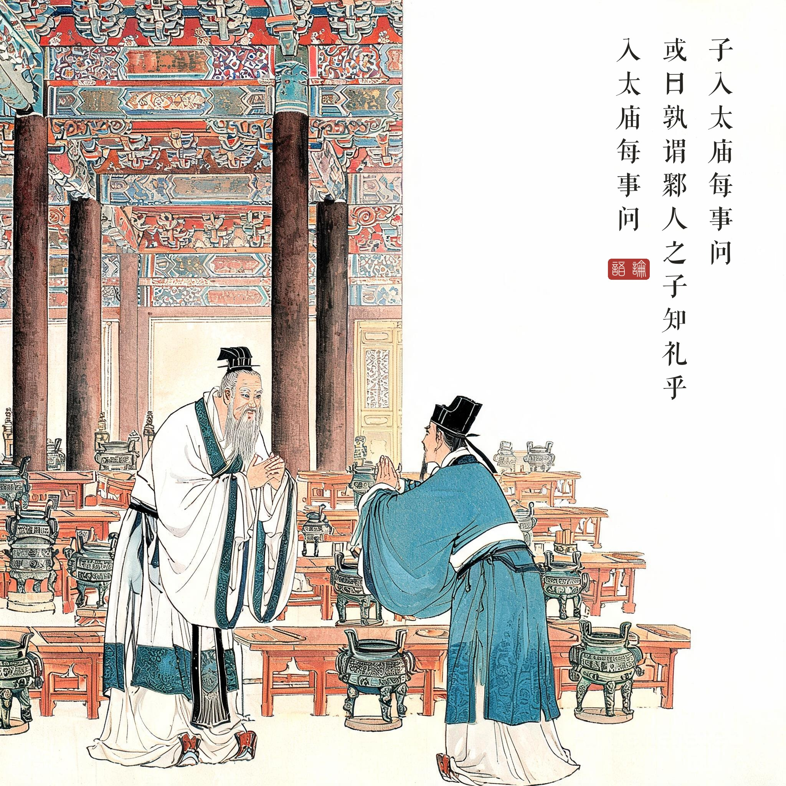
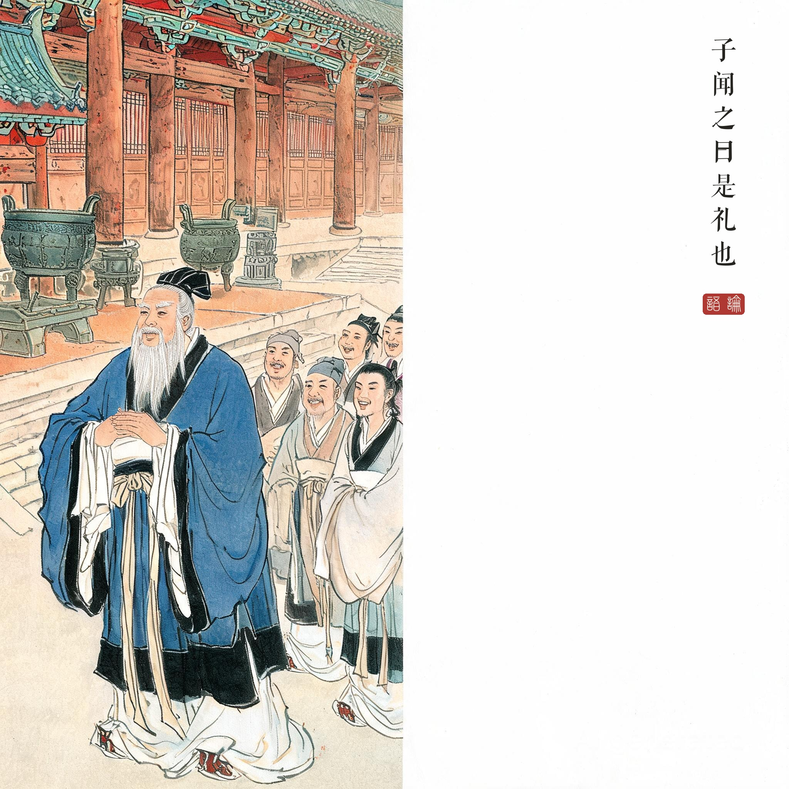
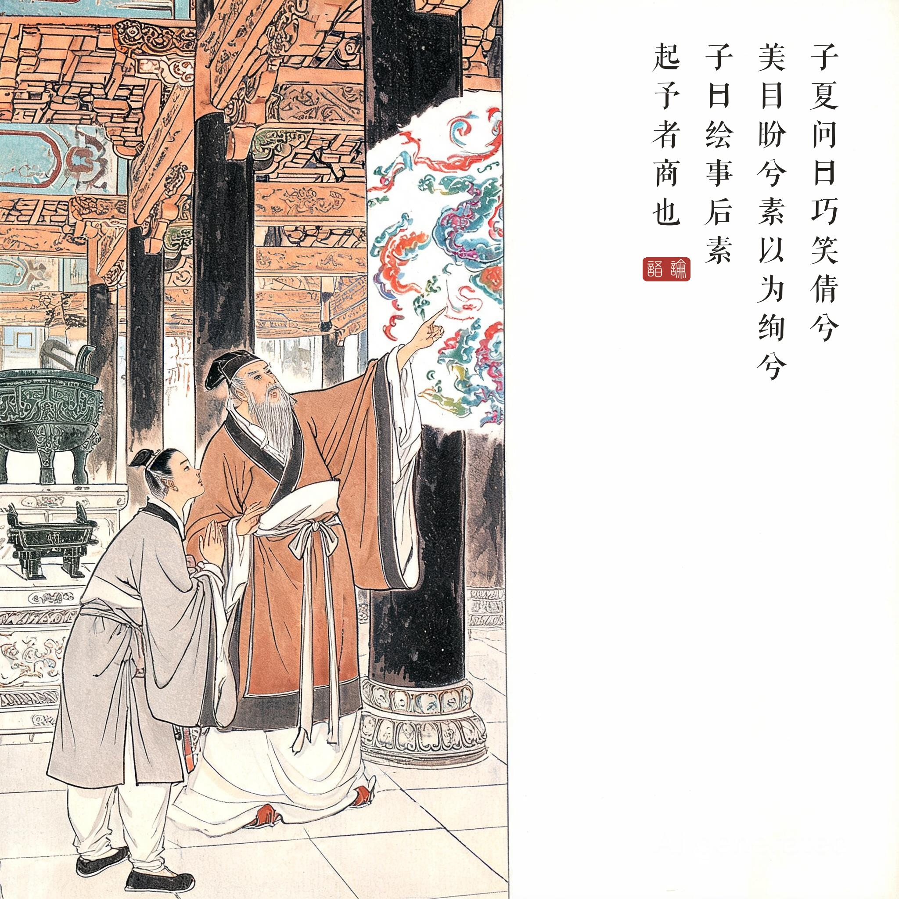

《论语 · 八佾第三》。鄹人之子指孔子（叔梁纥为鄹邑大夫）；绘事后素章为孔子与子夏论诗礼。
（据 daizhigev20《论语》底本节录，题款诸句见组画清单）
孔子进入太庙，每件事都虚心请教。有人讥讽："谁说鄹人的儿子懂礼？进了太庙什么都要问！"孔子听到说：这就是礼啊。
子夏问："巧笑倩盼，素以为绚——是什么意思？"孔子答："绘事后素。"子夏说："礼是不是也产生在（仁义等本色）之后呢？"孔子说："能启发我想法的是商啊，可以开始与你论《诗》了。"
钱穆《论语新解》指出："每事问"不是不知而问，而是知而仍问——祭祀之礼，主敬不在逞才，这正是"是礼也"的深意。
"知礼"的悖论。被讥"不知礼"恰恰是礼的实践：真正懂礼的人从不以懂自居。孔子的回答不辩解、不驳斥，只轻轻四字"是礼也"——大音希声，把讥讽化成了注脚。
绘事后素：中国美学第一命题。先有洁白底子，才画得上斑斓——人先有忠信之质，礼文才有附着之处。朱熹注："后素，后于素也。"这一章常与"文质彬彬"章并读：质胜文则野，文胜质则史——文与质的平衡，是儒家给中国艺术定下的第一原则。
读画小识。第一幅庙中问答、第二幅庙前一笑、第三幅廊下论画——三幅皆在太庙建筑群内取景，鼎俎礼器按周制设色；第三幅"指着未干彩绘"是画面点题之笔：绘事正进行，"后素"之义当场可指。